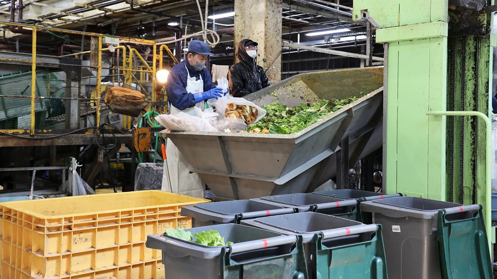

ENTREGA SUSTENTÁVEL: TRANSFORMANDO EXCESSO EM IMPACTOS POSITIVOS
Base Normativa e Compromisso Legal
"Política Nacional de Resíduos Sólidos estabelece regras para o manejo e descarte correto, focando em logística reversa e responsabilidade compartilhada."
"O Código de Defesa do Consumidor protege os direitos dos consumidores, garantindo transparência e proibindo práticas abusivas nas relações de consumo."
- Lei nº 8.078/1990 - planalto.gov.br"A Lei da Ação Civil Pública protege interesses coletivos, permitindo ações judiciais para defender o meio ambiente e o patrimônio público."
- Lei nº 7.347/1985 - planalto.gov.br"A Lei de Crimes Ambientais define punições para danos à natureza, responsabilizando pessoas e empresas por poluição ou desmatamento."
- Lei nº 9.605/1998 - planalto.gov.br"A Política Nacional sobre Mudanças Climáticas organiza as metas brasileiras para redução de gases estufa e incentivo à energia limpa."
- Lei nº 12.187/2009 - planalto.gov.br.png)
+750kg
apreendidos/semana
O Desafio em Maceió
Fiscalização Sanitária
A Vigilância Sanitária (Visa) realiza fiscalizações frequentes em feiras e supermercados. O resultado é alarmante: centenas de quilos de alimentos (carnes, laticínios e pães) são apreendidos semanalmente por estarem impróprios para o consumo.
Fiscalização e Doação
Em parceria com o Mesa Brasil Sesc, alimentos que estão fora do padrão de comercialização, mas ainda aptos para o consumo, são coletados e destinados a instituições sociais, transformando desperdício em solidariedade.
*
*
Transformar desperdício em ração animal
A proposta é introduzir um sistema de reciclagem e reaproveitamento dos resíduos orgânicos (frutas, vegetais, pães, carnes, etc. – após tratamento sanitário adequado) descartados por supermercados e atacadistas, transformando-os em ração animal de qualidade.
Benefícios para Maceió:

Custo-benefício
Fonte de ração mais barata para pequenos produtores rurais e cooperativas locais.

Apoio a ONGs de Animais
Parte dessa ração pode ser destinada a abrigos e ONGs protetoras de animais.

Segurança Nutricional
A ração resultante é rica em proteínas e nutrientes, sendo um insumo de alto valor.

Desenvolvimento Sustentável
Reduz drasticamente o envio de lixo orgânico ao aterro, diminuindo custos de manejo e a emissão de metano. A iniciativa alinha Maceió aos princípios da Economia Circular.
Exemplos de Sucesso no Brasil e no Mundo
Japão - Ecofeed

Empresas japonesas já transformam sobras de alimentos em uma ração ecológica chamada ecofeed, produzida por um processo de fermentação.
A ração custa metade do preço da convencional e diminui emissões de gases poluentes.
Saiba MaisBrasil - Reciclagem Animal

A indústria brasileira já recicla cerca de 14 milhões de toneladas de resíduos de abatedouros em farinhas e gorduras para aves e suínos.
Essa prática reduz o custo da ração em até 5% e evita contaminação ambiental.
Saiba MaisSobre o Projeto
Este projeto nasceu da necessidade de repensar o ciclo dos resíduos orgânicos em Maceió. Nossa solução foca na transformação do desperdício em oportunidade, unindo sustentabilidade ambiental e apoio social através da produção de ração animal.
Desenvolvido como parte do Projeto Integrador do curso (Aprendizagem em vendas) no SENAC Alagoas, este site representa a materialização de meses de pesquisa e desenvolvimento técnico, visando aplicar conceitos de logística verde e economia circular na nossa região.
EQUIPE
Millena Monteiro – Pesquisa & Lead Developer
Paulo Henrique – Colaboração na Visão Estética e pesquisa.